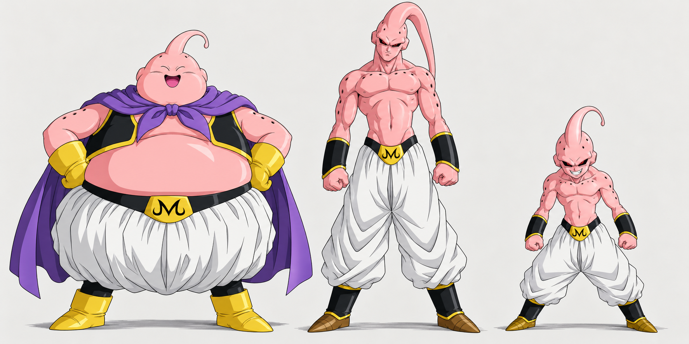

Conoce a Buu

Majin Buu
En nuestra ilustración lleva capa y aparece sonriente.
Super Buu y Kid Buu
Compara sus siluetas en la ilustración y visita el apartado de transformaciones.


En nuestra ilustración lleva capa y aparece sonriente.
Compara sus siluetas en la ilustración y visita el apartado de transformaciones.